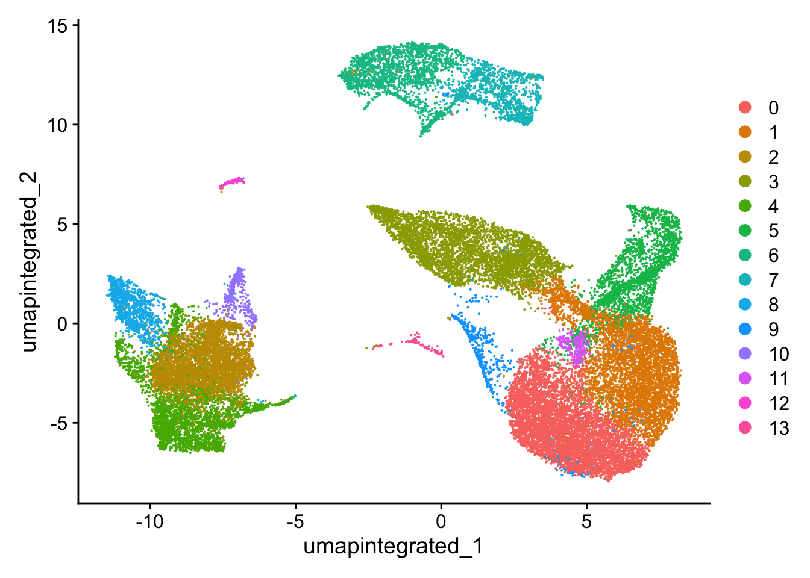

Describe methods for evaluating the number of principal components used for clustering
Perform clustering of cells based on significant principal components
Now that we have our high quality cells integrated, we want to know the different cell types present within our population of cells.
Goals:
To generate cell type-specific clusters and use known cell type marker genes to determine the identities of the clusters.
To determine whether clusters represent true cell types or cluster due to biological or technical variation, such as clusters of cells in the S phase of the cell cycle, clusters of specific batches, or cells with high mitochondrial content.
Challenges:
Identifying poor quality clusters that may be due to uninteresting biological or technical variation
Identifying the cell types of each cluster
Maintaining patience as this can be a highly iterative process between clustering and marker identification (sometimes even going back to the QC filtering)
Recommendations:
Have a good idea of your expectations for the cell types to be present prior to performing the clustering. Know whether you expect cell types of low complexity or higher mitochondrial content AND whether the cells are differentiating
If you have more than one condition, it’s often helpful to perform integration to align the cells
Regress out number of UMIs (by default with SCTransform), mitochondrial content, and cell cycle, if needed and appropriate for experiment, so not to drive clustering
Identify any junk clusters for removal or re-visit QC filtering. Possible junk clusters could include those with high mitochondrial content and low UMIs/genes. If comprised of a lot of cells, then may be helpful to go back to QC to filter out, then re-integrate/cluster.
If not detecting all cell types as separate clusters, try changing the resolution or the number of PCs used for clustering
An object of class Seurat
28130 features across 29629 samples within 2 assays
Active assay: SCT (14065 features, 3000 variable features)
3 layers present: counts, data, scale.data
1 other assay present: RNA
4 dimensional reductions calculated: pca, umap.unintegrated, integrated.cca, umap.integrated
To overcome the extensive technical noise in the expression of any single gene for scRNA-seq data, Seurat assigns cells to clusters based on their PCA scores derived from the expression of the integrated most variable genes, with each PC essentially representing a “metagene” that combines information across a correlated gene set. Determining how many PCs to include in the clustering step is therefore important to ensure that we are capturing the majority of the variation, or cell types, present in our dataset.
It is useful to explore the PCs prior to deciding which PCs to include for the downstream clustering analysis.
2.1 通过热图判断需要包括的主成分
One way of exploring the PCs is using a heatmap to visualize the most variant genes for select PCs with the genes and cells ordered by PCA scores. The idea here is to look at the PCs and determine whether the genes driving them make sense for differentiating the different cell types.
The cells argument specifies the number of cells with the most negative or postive PCA scores to use for the plotting. The idea is that we are looking for a PC where the heatmap starts to look more “fuzzy”, i.e. where the distinctions between the groups of genes is not so distinct.
This method can be slow and hard to visualize individual genes if we would like to explore a large number of PCs. In the same vein and to explore a large number of PCs, we could print out the top 10 (or more) positive and negative genes by PCA scores driving the PCs.
# Printing out the most variable genes driving PCsprint(x =seurat_integrated[["pca"]], dims =1:10, nfeatures =5)
The elbow plot is another helpful way to determine how many PCs to use for clustering so that we are capturing majority of the variation in the data. The elbow plot visualizes the standard deviation of each PC, and we are looking for where the standard deviations begins to plateau. Essentially, where the elbow appears is usually the threshold for identifying the majority of the variation. However, this method can be quite subjective.
Let’s draw an elbow plot using the top 40 PCs:
# Plot the elbow plotElbowPlot(object =seurat_integrated, ndims =40)
Based on this plot, we could roughly determine the majority of the variation by where the elbow occurs around PC8 - PC10, or one could argue that it should be when the data points start to get close to the X-axis, PC30 or so. This gives us a very rough idea of the number of PCs needed to be included, we can extract the information visualized here in a more quantitative manner, which may be a bit more reliable.
While the above 2 methods were used a lot more with older methods from Seurat for normalization and identification of variable genes, they are no longer as important as they used to be. This is because the SCTransform method is more accurate than older methods，基于SCTransform的标准化流程中不再需要判断纳入的主成分数量，可以纳入更多的主成分（见Seurat-基于SCTransform的单细胞数据标准化）.
Why is selection of PCs more important for older methods?
The older methods incorporated some technical sources of variation into some of the higher PCs, so selection of PCs was more important. SCTransform estimates the variance better and does not frequently include these sources of technical variation in the higher PCs.
In theory, with SCTransform, the more PCs we choose the more variation is accounted for when performing the clustering, but it takes a lot longer to perform the clustering. Therefore for this analysis, we will use the first 40 PCs to generate the clusters.
3 聚类（Cluster the cells）
Seurat uses a graph-based clustering approach using a K-nearest neighbor approach, and then attempts to partition this graph into highly interconnected ‘quasi-cliques’ or ‘communities’ （见Seurat-细胞聚类）. A nice in-depth description of clustering methods is provided in the SVI Bioinformatics and Cellular Genomics Lab course.
3.1 Find neighbors
The first step is to construct a K-nearest neighbor (KNN) graph based on the euclidean distance in PCA space.
Edges are drawn between cells with similar features expression patterns.
Edge weights are refined between any two cells based on shared overlap in their local neighborhoods.
This is done in Seurat by using the FindNeighbors() function（这里不需要运行，因为在上一节中我们已经在整合后运行了FindNeighbors）:
# Determine the K-nearest neighbor graph（不需运行）seurat_integrated<-FindNeighbors(seurat_integrated, dims =1:40, reduction ="integrated.cca")
3.2 Find clusters
Next, Seurat will iteratively group cells together with the goal of optimizing the standard modularity function.
We will use the FindClusters() function to perform the graph-based clustering. The resolution is an important argument that sets the “granularity” of the downstream clustering and will need to be optimized for every individual experiment. For datasets of 3,000 - 5,000 cells, the resolution set between 0.4-1.4 generally yields good clustering. Increased resolution values lead to a greater number of clusters, which is often required for larger datasets.
The FindClusters() function allows us to enter a series of resolutions and will calculate the “granularity” of the clustering. This is very helpful for testing which resolution works for moving forward without having to run the function for each resolution.
# Determine the clusters for various resolutions seurat_integrated<-FindClusters(object =seurat_integrated, resolution =c(0.4, 0.6, 0.8, 1.0, 1.4))
Modularity Optimizer version 1.3.0 by Ludo Waltman and Nees Jan van Eck
Number of nodes: 29629
Number of edges: 1128935
Running Louvain algorithm...
Maximum modularity in 10 random starts: 0.9211
Number of communities: 14
Elapsed time: 4 seconds
Modularity Optimizer version 1.3.0 by Ludo Waltman and Nees Jan van Eck
Number of nodes: 29629
Number of edges: 1128935
Running Louvain algorithm...
Maximum modularity in 10 random starts: 0.9019
Number of communities: 17
Elapsed time: 4 seconds
Modularity Optimizer version 1.3.0 by Ludo Waltman and Nees Jan van Eck
Number of nodes: 29629
Number of edges: 1128935
Running Louvain algorithm...
Maximum modularity in 10 random starts: 0.8864
Number of communities: 22
Elapsed time: 4 seconds
Modularity Optimizer version 1.3.0 by Ludo Waltman and Nees Jan van Eck
Number of nodes: 29629
Number of edges: 1128935
Running Louvain algorithm...
Maximum modularity in 10 random starts: 0.8727
Number of communities: 26
Elapsed time: 4 seconds
Modularity Optimizer version 1.3.0 by Ludo Waltman and Nees Jan van Eck
Number of nodes: 29629
Number of edges: 1128935
Running Louvain algorithm...
Maximum modularity in 10 random starts: 0.8511
Number of communities: 28
Elapsed time: 4 seconds
Both methods aim to place cells with similar local neighborhoods in high-dimensional space together in low-dimensional space. These methods will require you to input number of PCA dimentions to use for the visualization, we suggest using the same number of PCs as input to the clustering analysis. Here, we will proceed with the UMAP method for visualizing the clusters.
We can only visualize the results of one resolution setting at a time. If we look at the metadata of our Seurat object(seurat_integrated@meta.data), you should observe a separate column for each of the different resolutions calculated.
To choose a resolution to start with, we often pick something in the middle of the range like 0.6 or 0.8. We will start with a resolution of 0.8 by assigning the identity of the clusters using the Idents() function.
# Assign identity of clustersIdents(seurat_integrated)<-"SCT_snn_res.0.8"
Now, we can plot the UMAP to look at how cells cluster together at a resolution of 0.8:
# Calculation of UMAP# DO NOT RUN (calculated in the last lesson)seurat_integrated<-RunUMAP(seurat_integrated, dims =1:40, reduction ="integrated.cca", # 更改降维来源为整合后的"integrated.cca" reduction.name ="umap.integrated")
# Plot the UMAPDimPlot(seurat_integrated, reduction ="umap.integrated", label =FALSE, label.size =6)
It can be useful to explore other resolutions as well. It will give you a quick idea about how the clusters would change based on the resolution parameter. For example, let’s switch to a resolution of 0.4:
# Assign identity of clustersIdents(object =seurat_integrated)<-"SCT_snn_res.0.4"# Plot the UMAPDimPlot(seurat_integrated, reduction ="umap.integrated", label =FALSE, label.size =6)

4.1 载入案例数据
How does your UMAP plot compare to the one above?
It is possible that there is some variability in the way your clusters look compared to the image in this lesson. In particular you may see a difference in the labeling of clusters. This is an unfortunate consequence of slight variations in the versions of packages (mostly Seurat dependencies).
If your clusters look identical to what’s in the lesson, please go ahead to the next section.
If your clusters do look different from what we have in the lesson, please follow the instructions provided below.
Inside your data folder you will see a folder called additional_data. It contains the seurat_integrated object that we have created for the class. Let’s load in the object to your R session and overwrite the existing one:
An object of class Seurat
31130 features across 29629 samples within 3 assays
Active assay: integrated (3000 features, 3000 variable features)
2 layers present: data, scale.data
2 other assays present: RNA, SCT
2 dimensional reductions calculated: pca, umap
---title: "细胞聚类（clustering analysis）"---::: callout-note###### Learning Objectives:- Describe methods for evaluating the number of principal components used for clustering- Perform clustering of cells based on significant principal components:::Now that we have our high quality cells integrated, we want to know the different cell types present within our population of cells.{width="545"}------------------------------------------------------------------------**Goals:**- To generate **cell type-specific clusters** and use known cell type marker genes to **determine the identities of the clusters**.- To determine **whether clusters represent true cell types or cluster due to biological or technical variation**, such as clusters of cells in the S phase of the cell cycle, clusters of specific batches, or cells with high mitochondrial content.**Challenges:**- **Identifying poor quality clusters** that may be due to uninteresting biological or technical variation- **Identifying the cell types** of each cluster- Maintaining patience as this can be a highly iterative process between clustering and marker identification (sometimes even going back to the QC filtering)**Recommendations:**- Have a good idea of your expectations for the **cell types to be present** prior to performing the clustering. Know whether you expect cell types of low complexity or higher mitochondrial content AND whether the cells are differentiating- If you have **more than one condition**, it's often helpful to perform integration to align the cells- **Regress out** number of UMIs (by default with `SCTransform`), mitochondrial content, and cell cycle, if needed and appropriate for experiment, so not to drive clustering- Identify any **junk clusters** for removal or re-visit QC filtering. Possible junk clusters could include those with high mitochondrial content and low UMIs/genes. If comprised of a lot of cells, then may be helpful to go back to QC to filter out, then re-integrate/cluster.- If **not detecting all cell types as separate clusters**, try changing the resolution or the number of PCs used for clustering------------------------------------------------------------------------# Set up读取[上一节](/single_cell/scRNA-seq_online/06_integration.qmd)中完成质控和整合的单细胞数据`seurat_integrated`。```{r}library(Seurat)seurat_integrated <-readRDS("output/scRNA-seq_online/integrated_seurat.rds")seurat_integratedhead(seurat_integrated, 5)```# 决定后续分析的主成分To overcome the extensive technical noise in the expression of any single gene for scRNA-seq data, **Seurat assigns cells to clusters based on their PCA scores derived from the expression of the integrated most variable genes**, with each PC essentially representing a "metagene" that combines information across a correlated gene set. **Determining how many PCs to include in the clustering step is therefore important to ensure that we are capturing the majority of the variation**, or cell types, present in our dataset.It is useful to explore the PCs prior to deciding which PCs to include for the downstream clustering analysis.## 通过热图判断需要包括的主成分One way of exploring the PCs is using a heatmap to visualize the most variant genes for select PCs with the **genes and cells ordered by PCA scores**. The idea here is to look at the PCs and determine whether the genes driving them make sense for differentiating the different cell types.The `cells` argument specifies the number of cells with the most negative or postive PCA scores to use for the plotting. The idea is that we are **looking for a PC where the heatmap starts to look more "fuzzy"**, i.e. **where the distinctions between the groups of genes is not so distinct**.```{r}#| fig-width: 10#| fig-height: 10# Explore heatmap of PCsDimHeatmap(seurat_integrated, dims =1:9, cells =500, balanced =TRUE)```This method can be slow and hard to visualize individual genes if we would like to explore a large number of PCs. In the same vein and to explore a large number of PCs, we could print out the top 10 (or more) positive and negative genes by PCA scores driving the PCs.```{r}# Printing out the most variable genes driving PCsprint(x = seurat_integrated[["pca"]], dims =1:10, nfeatures =5)```## 通过肘图（elbow plot）判断需要包括的主成分The **elbow plot** is another helpful way to determine how many PCs to use for clustering so that we are capturing majority of the variation in the data. The elbow plot visualizes the standard deviation of each PC, and we are looking for where the standard deviations begins to plateau. Essentially, **where the elbow appears is usually the threshold for identifying the majority of the variation**. However, this method can be quite subjective.Let's draw an elbow plot using the top 40 PCs:```{r}# Plot the elbow plotElbowPlot(object = seurat_integrated, ndims =40)```Based on this plot, we could roughly determine the majority of the variation by where the elbow occurs around PC8 - PC10, or one could argue that it should be when the data points start to get close to the X-axis, PC30 or so. This gives us a very rough idea of the number of PCs needed to be included, we can extract the information visualized here in a [**more quantitative manner**](https://hbctraining.github.io/scRNA-seq_online/lessons/elbow_plot_metric.html), which may be a bit more reliable.While the above 2 methods were used a lot more with older methods from Seurat for normalization and identification of variable genes, they are no longer as important as they used to be. This is because the **SCTransform method is more accurate than older methods，基于`SCTransform`的标准化流程中不再需要判断纳入的主成分数量，可以纳入更多的主成分（**见[Seurat-基于SCTransform的单细胞数据标准化](/single_cell/seurat/sctransform.qmd#sec-clustering)**）**.::: callout-note###### Why is selection of PCs more important for older methods?The older methods incorporated some technical sources of variation into some of the higher PCs, so selection of PCs was more important. `SCTransform` estimates the variance better and does not frequently include these sources of technical variation in the higher PCs.In theory, with `SCTransform`, **the more PCs we choose the more variation is accounted for when performing the clustering**, but it takes a lot longer to perform the clustering. Therefore for this analysis, we will use the **first 40 PCs** to generate the clusters.:::# 聚类（Cluster the cells）Seurat uses a graph-based clustering approach using a K-nearest neighbor approach, and then attempts to partition this graph into highly interconnected 'quasi-cliques' or 'communities' （见[Seurat-细胞聚类](/single_cell/seurat/seurat_tutorial.qmd#sec-clustering_seurat)）. A nice in-depth description of clustering methods is provided in the [SVI Bioinformatics and Cellular Genomics Lab course](https://biocellgen-public.svi.edu.au/mig_2019_scrnaseq-workshop/clustering-and-cell-annotation.html).## Find neighborsThe first step is to **construct a K-nearest neighbor (KNN) graph** based on the euclidean distance in PCA space.> *Image source: [Analysis of Single cell RNA-seq data](https://biocellgen-public.svi.edu.au/mig_2019_scrnaseq-workshop/clustering-and-cell-annotation.html)*- Edges are drawn between cells with similar features expression patterns.- Edge weights are refined between any two cells based on shared overlap in their local neighborhoods.This is done in Seurat by using the `FindNeighbors()` function（这里不需要运行，因为在上一节中我们已经在整合后运行了`FindNeighbors`）:```{r}#| eval: false# Determine the K-nearest neighbor graph（不需运行）seurat_integrated <-FindNeighbors(seurat_integrated, dims =1:40, reduction ="integrated.cca")```## Find clustersNext, Seurat will **iteratively group cells together with the goal of optimizing the standard modularity function**.We will use the `FindClusters()` function to perform the graph-based clustering. The `resolution` is an important argument that sets the "granularity" of the downstream clustering and will need to be optimized for every individual experiment. **For datasets of 3,000 - 5,000 cells, the `resolution` set between `0.4`-`1.4` generally yields good clustering**. Increased resolution values lead to a greater number of clusters, which is often required for larger datasets.The `FindClusters()` function allows us to enter a series of resolutions and will calculate the "granularity" of the clustering. This is very helpful for testing which resolution works for moving forward without having to run the function for each resolution.```{r}# Determine the clusters for various resolutions seurat_integrated <-FindClusters(object = seurat_integrated,resolution =c(0.4, 0.6, 0.8, 1.0, 1.4))```# Visualize clusters of cells {#sec-visualize-clusters-of-cells}To visualize the cell clusters, there are a few different dimensionality reduction techniques that can be helpful. The most popular methods include [t-distributed stochastic neighbor embedding (t-SNE)](https://kb.10xgenomics.com/hc/en-us/articles/217265066-What-is-t-Distributed-Stochastic-Neighbor-Embedding-t-SNE-) and [Uniform Manifold Approximation and Projection (UMAP)](https://umap-learn.readthedocs.io/en/latest/index.html) techniques.Both methods aim to place cells with similar local neighborhoods in high-dimensional space together in low-dimensional space. These methods will require you to input number of PCA dimentions to use for the visualization, we suggest using the same number of PCs as input to the clustering analysis. Here, we will proceed with the [UMAP method](https://umap-learn.readthedocs.io/en/latest/how_umap_works.html) for visualizing the clusters.We can only visualize the results of one resolution setting at a time. If we look at the metadata of our Seurat object(`seurat_integrated@meta.data`), you should observe a separate column for each of the different resolutions calculated.```{r}# Explore resolutionshead(seurat_integrated@meta.data, 5)```To **choose a resolution to start with**, we often pick something in the middle of the range like 0.6 or 0.8. We will start with a resolution of 0.8 by assigning the identity of the clusters using the `Idents()` function.```{r}# Assign identity of clustersIdents(seurat_integrated) <-"SCT_snn_res.0.8"```Now, we can plot the UMAP to look at how cells cluster together at a resolution of 0.8:```{r}#| eval: false# Calculation of UMAP# DO NOT RUN (calculated in the last lesson)seurat_integrated <-RunUMAP(seurat_integrated, dims =1:40,reduction ="integrated.cca", # 更改降维来源为整合后的"integrated.cca"reduction.name ="umap.integrated") ``````{r}# Plot the UMAPDimPlot(seurat_integrated,reduction ="umap.integrated",label =FALSE,label.size =6)```It can be useful to **explore other resolutions as well**. It will give you a quick idea about how the clusters would change based on the resolution parameter. For example, let's switch to a resolution of 0.4:```{r}# Assign identity of clustersIdents(object = seurat_integrated) <-"SCT_snn_res.0.4"# Plot the UMAPDimPlot(seurat_integrated,reduction ="umap.integrated",label =FALSE,label.size =6)```## 载入案例数据 {#sec-Load_case_data}**How does your UMAP plot compare to the one above?**It is possible that there is some variability in the way your clusters look compared to the image in this lesson. In particular **you may see a difference in the labeling of clusters**. This is an unfortunate consequence of slight variations in the versions of packages (mostly Seurat dependencies).**If your clusters look identical to what's in the lesson, please go ahead to the next section.**------------------------------------------------------------------------**If your clusters do look different from what we have in the lesson**, please follow the instructions provided below.Inside your `data` folder you will see a folder called `additional_data`. It contains the seurat_integrated object that we have created for the class. Let's load in the object to your R session and overwrite the existing one:```{r}load(bzfile("data/scRNA-seq_online/additional_data/seurat_integrated.RData.bz2"))seurat_integratedhead(seurat_integrated, 5)```::: callout-warning由于这里的案例数据是基于Seurat V5之前的版本创建的，所以数据结构和基于Seurat V5的结果有所差异。比较重要的区别是，这里的Seurat对象的没有layer结构；同时有一个“integrated” assay，用于存放整合后的信息，其类型仍属于SCT assay。而一个典型的经过SCTransform和整合的Seurat V5对象如下图所示（来自[Seurat-整合](/single_cell/seurat/integration.qmd#sec-integration_after_sct)）：可以看到没有“integrated” assay，因此，为了和最新的Seurat V5流程保持一致，我们后续把本案例中的“integrated” assay看作整合后的Seurat V5的“SCT” assay。:::------------------------------------------------------------------------## 再次检查不同分辨率下的细胞分群情况After loading `seurat_integrated.RData.bz2`, we now re-check the object clusters with different resolution (0.4, 0.6, 0.8, 1.0, 1.4).```{r}# 查看不同分辨率下的细胞分群情况apply(seurat_integrated@meta.data[ ,grep("integrated_snn_res.", colnames(seurat_integrated@meta.data))], 2, table)``````{r}# 批量绘制不同分辨率下的UMAP图library(ggplot2)library(patchwork)lapply(grep("integrated_snn_res.",colnames(seurat_integrated@meta.data), value =TRUE),function(res) {Idents(seurat_integrated) <- resDimPlot(seurat_integrated,reduction ="umap",label =FALSE,label.size =4) +ggtitle(res) +theme_bw() }) |>wrap_plots(ncol =2)```------------------------------------------------------------------------We will now continue with the 0.8 resolution to check the quality control metrics and known markers for the anticipated cell types.```{r}#| cache-lazy: false# Assign identity of clustersIdents(seurat_integrated) <-"integrated_snn_res.0.8"# Plot the UMAPDimPlot(seurat_integrated,reduction ="umap",label =TRUE,label.size =6)``````{r}saveRDS(seurat_integrated, file ="output/scRNA-seq_online/seurat_clustered.rds")```------------------------------------------------------------------------::: {.callout-note collapse="true" icon="false"}## Session Info```{r}#| echo: falsesessionInfo()```:::